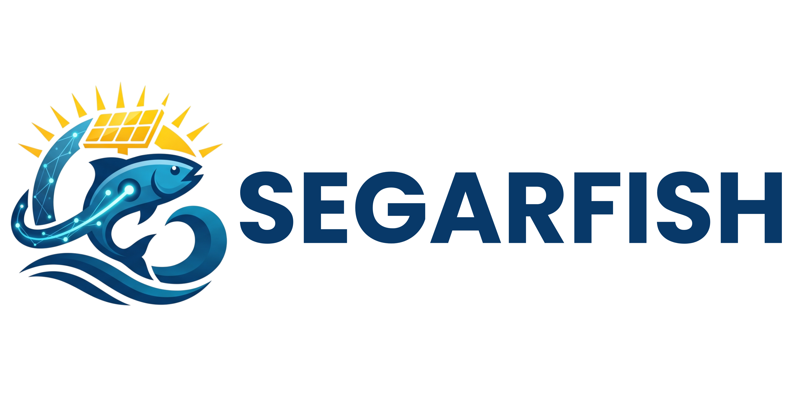

Fish Vision
Idle
No camera source selected
Start the device camera, or use an image or IP stream instead.
Start Camera
Upload an image
·
Connect IP camera
Detecting
0 fish detected
Analyzing…
Something went wrong
Please try again.
Try Again
IP Camera URL
Connect